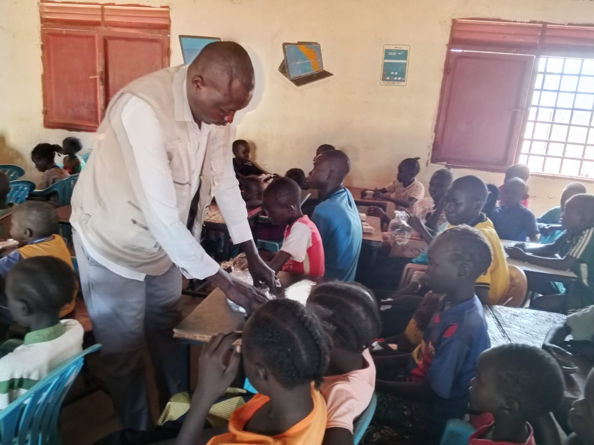
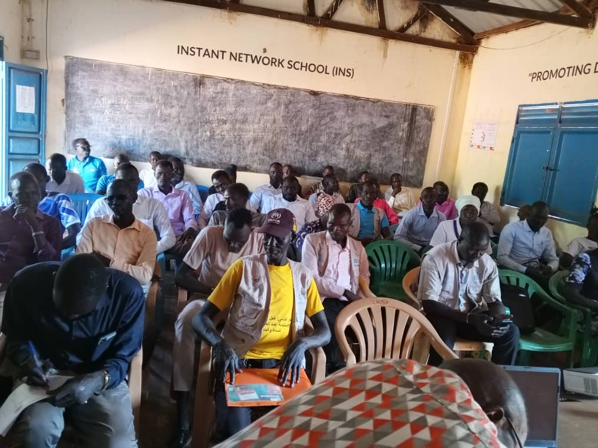
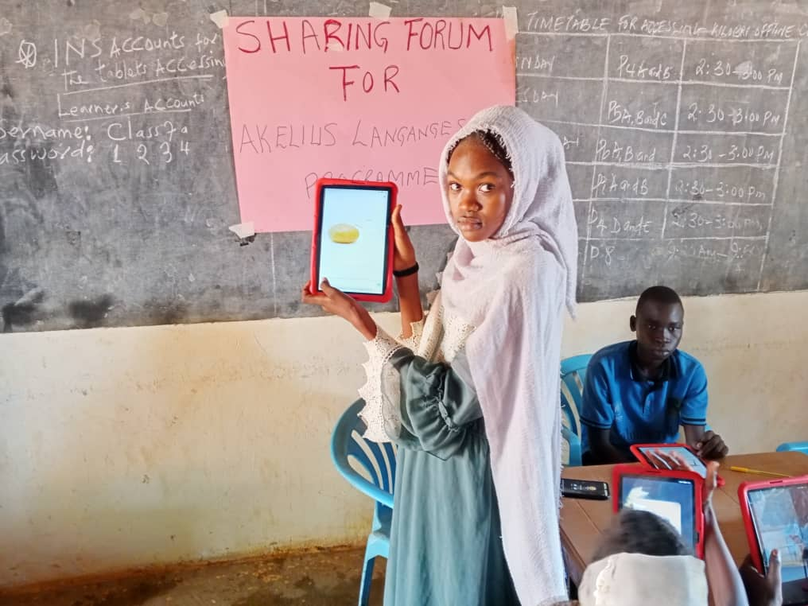

Tintilin Initiative For Development (TID) is a humanitarian and development organization committed to empowering vulnerable communities through integrated, sustainable solutions that create long-term impact.
Communities Served
Beneficiaries
Projects Implemented
Years Experience

Educating children how to learn through uisng INS Tools like Tablets.

Training youth in ICT and entrepreneurship.

Supporting women-led businesses in communities.